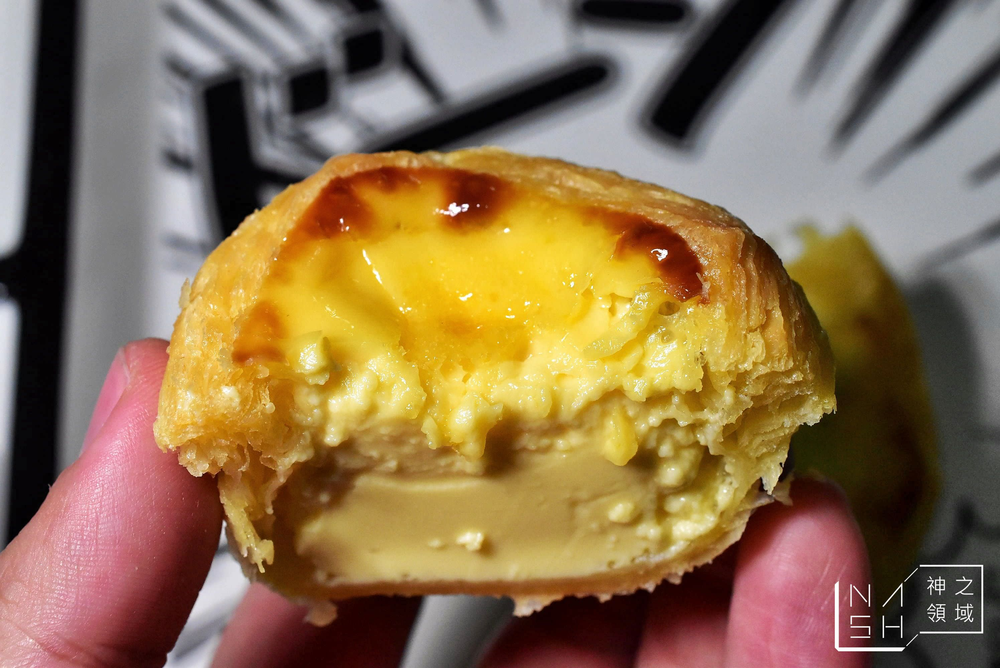
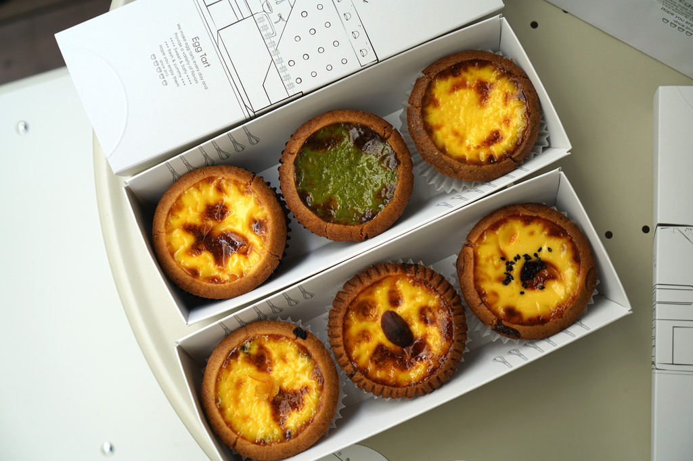
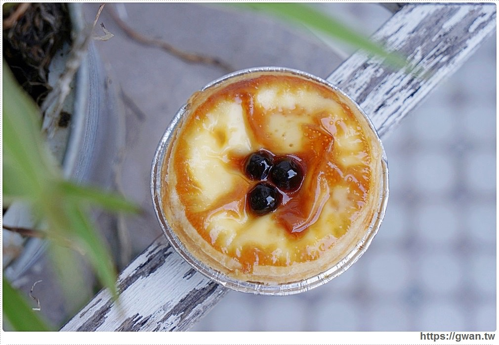
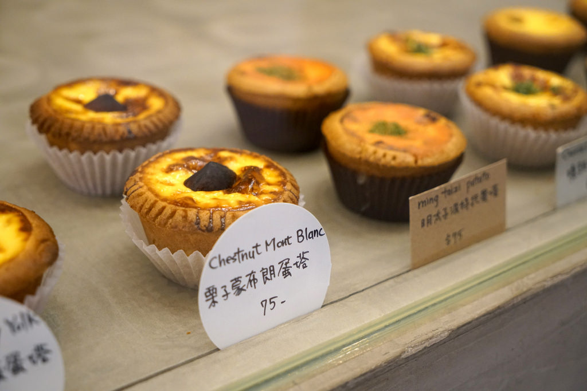
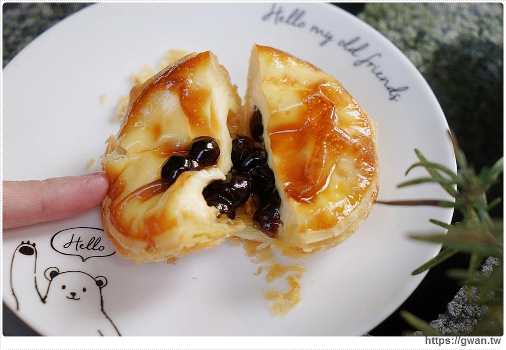

1.台北-安德斯葡式蛋塔

- 口味：原味塔、肉桂塔、糖粉塔、髒髒塔
- 安德斯葡式蛋塔最大的特色便是它疊得厚厚的一大層塔皮，一層層酥脆塔皮包覆著蛋塔的奶香，是最正統的葡式蛋塔味道
- 地址：
台北市士林區中山北路五段711號
- 電話 : (02)2837-1068
- 營業時間 : 14:30-21:00
2.台中-克莉斯塔Christine_tart

-
口味：原味、烏豆沙蛋黃、珍珠奶茶、抹茶紅豆、松露巧克力、栗子蒙布朗、法式香橙可可、明太子波特多、
拿鐵咖啡等不同口味
-
克莉斯塔店面不像是一般的蛋塔專賣店，而是看起來很像漂亮的下午茶店，是少數蛋塔店中可以坐下來細細品
嘗蛋塔的店家，也可能因為裝潢的緣故，蛋塔的價格是三家店中最高的。然而最大的特色是它蛋塔的種類非
常繁多，而且內容物非常有創意，很值得喜歡新奇的你來品嘗!
- 地址：
台中市西區美村路一段117巷21號-D
- 電話 : 0937 200 802
- 營業時間 : 13:00-19:00
3.台南-Mr.Z小棧

- 口味：原味、波霸、巧克力、紅豆
- 從照片中可以看到，一切開蛋塔就可以看見波霸一顆顆等不及的滾動出來，想像那滑順的口感配上Q彈的嚼勁，
一想到就很興奮呢！而且Mr.Z小棧最大的特色是它使用的原料是很好的原料──法國藍絲可鮮奶油與初鹿鮮乳
- 地址：
台南市南區金華路二段27-2號 (玉山銀行對面)
- 電話 : (06) 291-9200/0977-687-575
- 營業時間 : 周日~周四 14:00~21:00 / 周五~周六 14:00~22:00(周一公休)
| 台北 |
台中 |
台南 |
| 安德斯葡式蛋塔 |
克莉斯塔 |
Mr.Z小棧 |
| 原味、肉桂、糖粉、髒髒塔 |
口味眾多，且每日口味皆有變化 |
原味、波霸、紅豆、巧克力 |
| 全部口味皆$35 |
依照口味不同，$45~75不等 |
所有口味都$30 |
| 塔皮酥脆、多層 |
口味很多很新奇 |
使用很好的食材 |
|
 |
 |
假如還有什麼推薦的蛋塔店也可以經由Email聯絡我喔~
Email